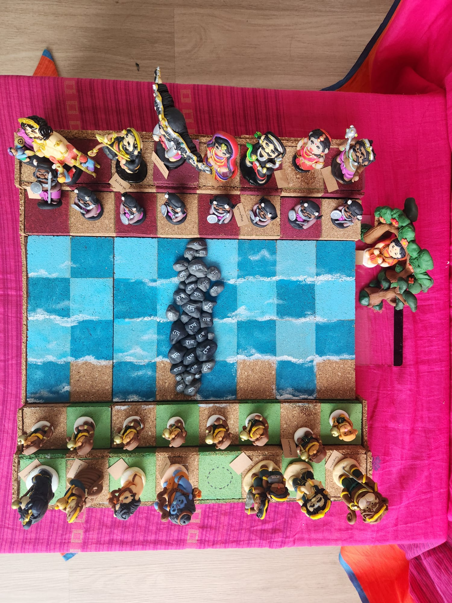
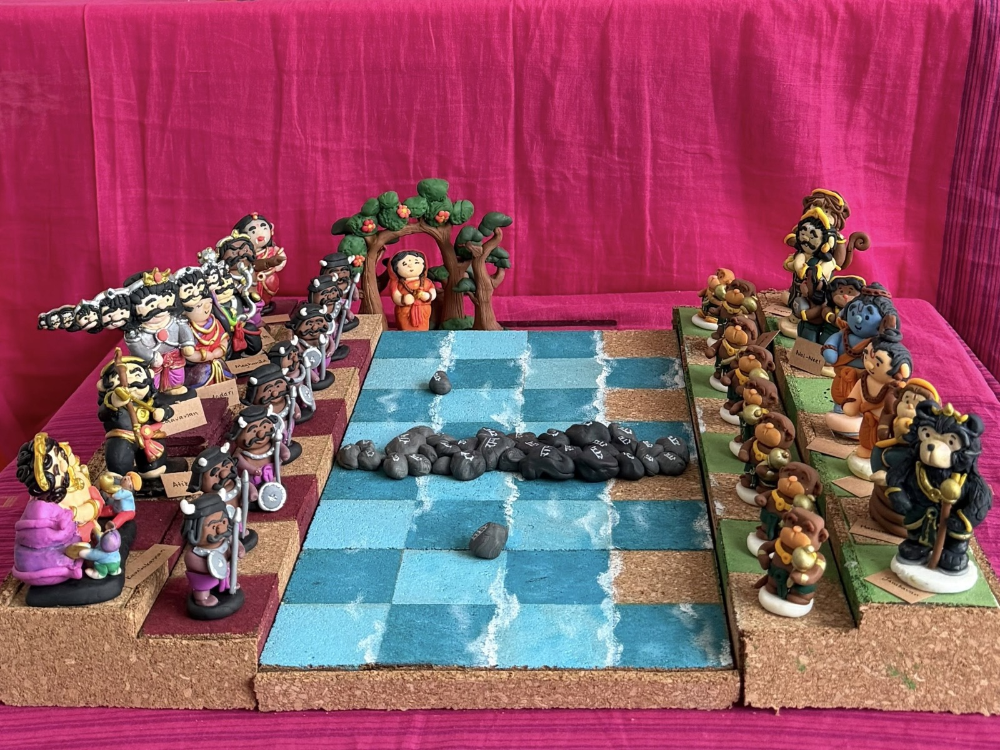
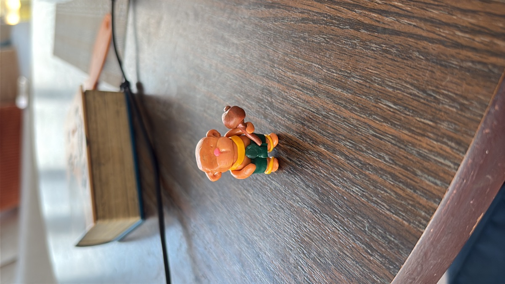
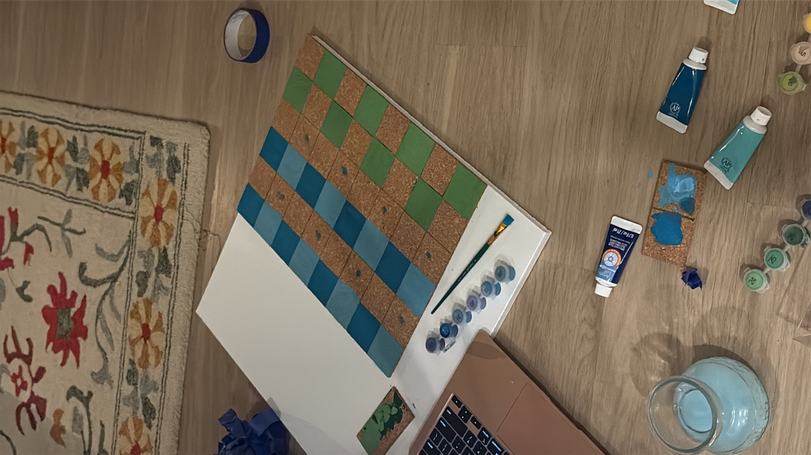
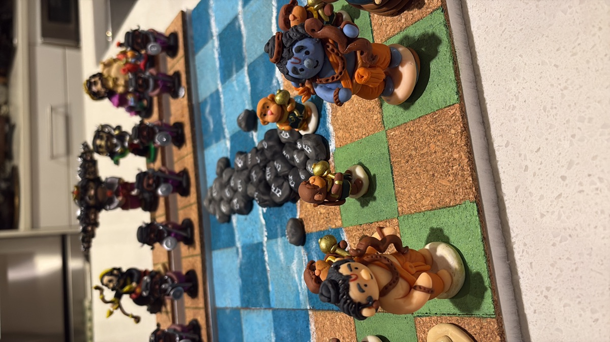
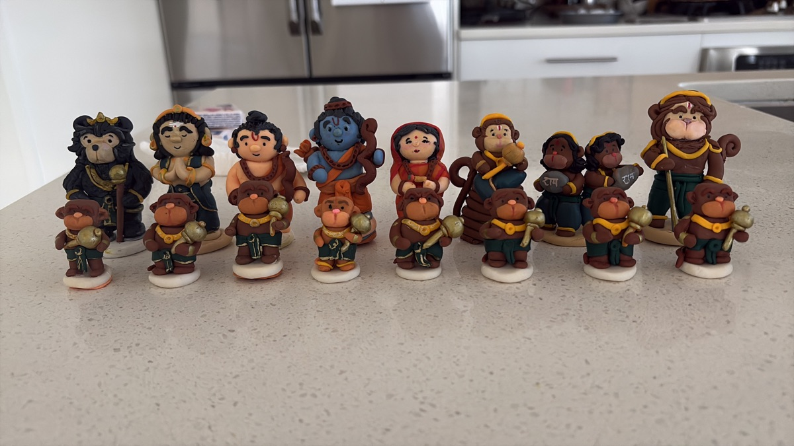
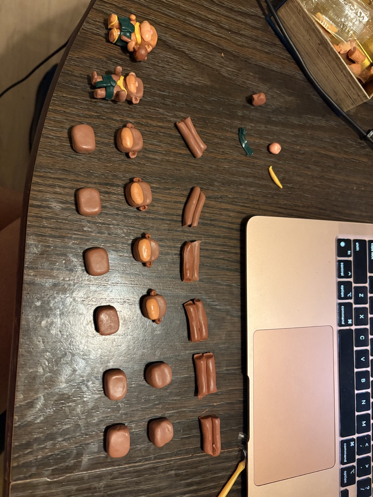
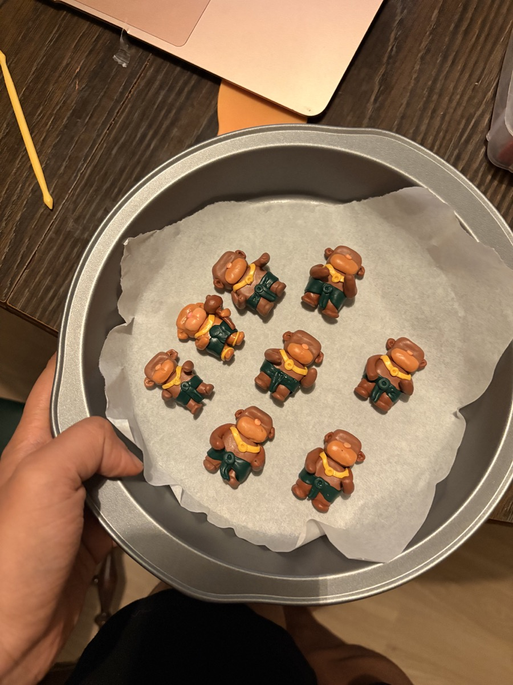

For this year’s Navaratri Golu, I made a chess board of the battle between Rama and Ravana. I sculpted the pieces from polymer clay and made the board from cork and foam board.
Finished chess board

Ram’s army starts on the green squares of the Dandaka forests, facing Ravana’s forces on the red squares of Lanka. The blue squares represent the ocean, and the stones marked with Ram’s name form the bridge his army crosses to reach Sita. She is the “captured” queen, so her square on the white side is empty. She waits in the Ashoka gardens beside the board.

Close-up of the pieces
Work in progress

An early vanara pawn with a gold mace.

Painting the ocean squares and shoreline before setting out the pieces.

Testing playability of the pieces

Finished most of Ram's army pieces

Clay heads and bodies laid out before assembling the pawns.

A batch of vanara pawns on a parchment-lined tray, ready to be baked.